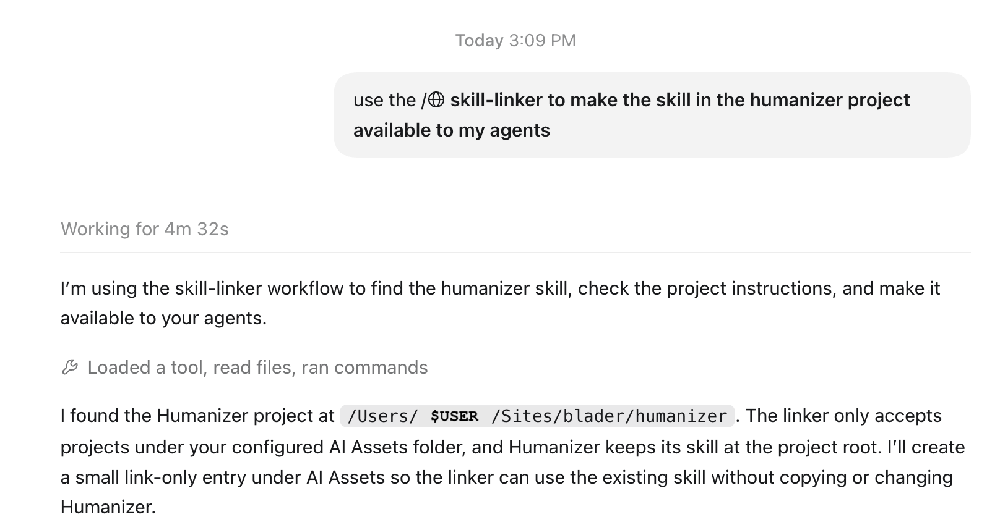

Find and organize what you have
The AI asset auditor finds your skills and MCP servers, flags duplicates and broken links, and proposes a cleanup plan for you to review before it changes files.
Guide 2 · Asset organization
Marketplace plugins, cloned repositories, and custom scripts can leave your AI assets scattered across folders. The setup assistant inspects them, recommends how to organize them, and applies the changes you approve. It explains any conflicts before asking you which version to keep.
The problem
Copies drift, links break, and updates can erase local changes. Knowing who maintains an asset and how it gets updated helps you choose which copy each tool should use.
During guided setup, the assistant inspects the folders and discovery rules for you. You can also ask it to check just one asset.
The idea
The original skill stays in its project. A local skills folder can point to the skills you want your tools to use.
Repository folders and links for your tools
~/AI Assets/: maintained repository sourcesdata-org/ └── repo-one/ └── skills/ └── concaten-gator/ └── SKILL.md platform-org/ └── sub-group/ └── repo-two/ └── skills/ └── meeting-maxi/ └── SKILL.md your-username/ └── repo-three/ └── skills/ └── build-automation/ └── SKILL.md
~/.agents/skills/: an example hub for links to selected skillsconcaten-gator → ~/AI Assets/data-org/repo-one/skills/concaten-gator/ meeting-maxi → ~/AI Assets/platform-org/sub-group/repo-two/skills/meeting-maxi/ build-automation → ~/AI Assets/your-username/repo-three/skills/build-automation/
Marketplace packages
The auditor leaves marketplace caches and generated installs where their package manager expects them. It records the package, source, version, scope, and update method alongside your repository sources.
A plugin can also come from a local repository. Its format tells you how it is packaged; the assistant checks the installation record to find out who manages it. Before cleanup, it looks for the same skill in loose folders and checks which links other tools still need. If you want to customize a package, it helps you maintain your own fork and select it in the target tool.
Lola copies modules and generates assistant files; Claude Code manages plugins by installation scope. Neither requires moving installed files into this repository layout.
Scripts and executable helpers
A private script catalog records selected names and invocation details. It points to one maintained source for each script. The resolver reads the catalog and returns the file, interpreter, arguments, and working directory without running the script. This is a project convention for local desktop agents, not a native script directory that every tool scans.
| Kind | Maintained source | Lookup |
|---|---|---|
| Skill helper | Its skill bundle, including scripts/ and resources | Path relative to the loaded skill; catalog entry only if useful by name |
| Project script | Its application or project repository | Registered source ID and relative entrypoint |
| Reusable personal utility | An appropriate maintained personal repository | Stable ID and reviewed aliases |
| Installer executable | Installer-managed location | Document the runtime binding; leave installed files in place |
| Historical experiment | Owning project or archive | Archived entry, excluded from ordinary lookup |
Keep private configuration, generated inventory, mutable state, and logs separate from distributed code. A skills link can deliver an intact skill bundle; it is optional and does not make standalone scripts discoverable. See the script procedure.
Use the skills
During guided setup, agent-setup uses these skills as needed and carries your choices forward. You stay in the same conversation. For a single task later, ask your assistant to use the relevant skill below.
The AI asset auditor finds your skills and MCP servers, flags duplicates and broken links, and proposes a cleanup plan for you to review before it changes files.
The skill linker makes selected project skills available to your agents. It checks existing installations, previews the links, and verifies discovery in those tools. Your source files stay in their repository.
The override safeguard guides changes to team or vendor skills. It tells the assistant to check ownership, edit a personal copy, and update the intended local link. The assistant must follow those instructions; the skill cannot lock files.

Your input
You don’t need to sort through the folders before starting. If the assistant finds two skills with the same name or a reason to move files, it compares the options and recommends what to do. You review that plan before it applies the changes. It then checks discovery and use in the intended tool, reporting any check it could not complete.
For the folder layout, see the overview. For differences between local tools and hosted runtimes, use the compatibility guide.